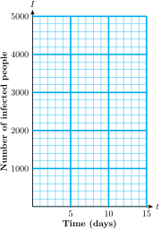
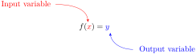
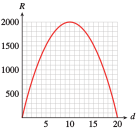
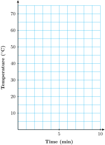

A contagious disease whose spread is unchecked can devastate a confined population. For example, in the early 16th-century, Spanish troops introduced smallpox into the Aztec population in Central America, and the resulting epidemic contributed significantly to the fall of Montezuma’s empire.
Suppose that an outbreak of cholera follows severe flooding in an isolated town of 5000 people. Initially (Day 0), 40 people are infected. Every day after that, 25% of those still healthy fall ill.
At the beginning of the first day (Day 1), how many people are still healthy? How many will fall ill during the first day? What is the total number of people infected after the first day?
Check your results against the table below. Subtract the total number of infected residents from 5000 to find the number of healthy residents at the beginning of the second day. Then fill in the rest of the table for 10 days. (Round off decimal results to the nearest whole number.)
Day
Number healthy
New patients
Total infected
\(0\)
\(5000\)
\(40\)
\(40\)
\(1\)
\(4960\)
\(1240\)
\(1280\)
\(2\)
\(\)
\(\)
\(\)
\(3\)
\(\)
\(\)
\(\)
\(4\)
\(\)
\(\)
\(\)
\(5\)
\(\)
\(\)
\(\)
\(6\)
\(\)
\(\)
\(\)
\(7\)
\(\)
\(\)
\(\)
\(8\)
\(\)
\(\)
\(\)
\(9\)
\(\)
\(\)
\(\)
\(10\)
\(\)
\(\)
\(\)

Use the last column of the table to plot the total number of infected residents, \(I\text{,}\) against time, \(t\text{,}\) on the grid. Connect your data points with a smooth curve.
Do the values of \(I\) approach some largest value? Draw a dotted horizontal line at that value of \(I\text{.}\) Will the values of \(I\) ever exceed that value?
What is the first day on which at least 95% of the population is infected?
Look back at the table. What is happening to the number of new patients each day as time goes on? How is this phenomenon reflected in the graph? How would your graph look if the number of new patients every day were a constant?
Summarize your work: In your own words, describe how the number of residents infected with cholera changes with time. Include a description of your graph.
Subsection5.1.1Definitions and Notation
We often want to predict values of one variable from the values of a related variable. For example, when a physician prescribes a drug in a certain dosage, she needs to know how long the dose will remain in the bloodstream. A sales manager needs to know how the price of his product will affect its sales. A function is a special type of relationship between variables that allows us to make such predictions.
We have already seen some examples of functions. For instance, suppose it costs $800 for flying lessons, plus $30 per hour to rent a plane. If we let \(C\) represent the total cost for \(t\) hours of flying lessons, then
The variable \(t\) is called the input variable, and \(C\) is the output variable. Given a value of the input, we can calculate the corresponding output value using the formula for the function. Thus, for example
when
\(t=\alert{0}\text{,}\)
\(C=800+30(\alert{0})=800\)
when
\(t=\alert{4}\text{,}\)
\(C=800+30(\alert{4})=920\)
when
\(t=\alert{10}\text{,}\)
\(C=800+30(\alert{10})=1100\)
We can display the relationship between two variables by a table or by ordered pairs. The input variable is the first component of the ordered pair, and the output variable is the second component. For the example above we have:
\(t\)
\(C\)
\((t,C)\)
\(0\)
\(800\)
\((0, 800)\)
\(4\)
\(920\)
\((4, 920)\)
\(10\)
\(1100\)
\((10,1100)\)
Note that there can be only one value of \(C\) for each value of \(t\text{.}\) We say that "\(C\) is a function of \(t\text{.}\)"
Definition5.1.1.Definition of Function.
A function is a relationship between two variables for which exactly one value of the output variable is determined by each value of the input variable.
Checkpoint5.1.2.QuickCheck 1.
Example5.1.3.
The distance, \(d\text{,}\) traveled by a car in 2 hours is a function of its speed, \(r\text{.}\) If we know the speed of the car, we can determine the distance it travels by the formula \(d = r \cdot 2\text{.}\)
The cost of a fill-up with unleaded gasoline is a function of the number of gallons purchased. The gas pump represents the function by displaying the corresponding values of the input variable (number of gallons) and the output variable (cost).
Score on the Scholastic Aptitude Test (SAT) is not a function of score on an IQ test, because two people with the same score on an IQ test may score differently on the SAT; that is, a person’s score on the SAT is not uniquely determined by his or her score on an IQ test.
Checkpoint5.1.4.Practice 1.
A function can be described in several different ways. In the following examples, we consider functions defined by tables, by graphs, and by equations.
Subsection5.1.2Functions Defined by Tables
When we use a table to describe a function, the first variable in the table (the left column of a vertical table or the top row of a horizontal table) is the input variable, and the second variable is the output. We say that the output variable is a function of the input.
Example5.1.5.
The table below shows data on sales compiled over several years by the accounting office for Eau Claire Auto Parts, a division of Major Motors. In this example, the year is the input variable, and total sales is the output. We say that total sales, \(S\text{,}\)is a function of\(t\text{.}\)
Year \((t)\)
Total sales \((S)\)
2000
$612,000
2001
$663,000
2002
$692,000
2003
$749,000
2004
$904,000
The table below gives the cost of sending a letter by first-class mail in 2022.
Weight in ounces \((w)\)
Postage \((P)\)
\(0 \lt w \le 1 \)
$0.60
\(1 \lt w \le 2 \)
$0.84
\(2 \lt w \le 3 \)
$1.08
\(3 \lt w \le 4 \)
$1.32
\(4 \lt w \le 5 \)
$1.56
\(5 \lt w \le 6 \)
$1.80
\(6 \lt w \le 7 \)
$2.04
If we know the weight of the article being mailed, we can find the postage from the table. For instance, a catalog weighing 4.5 ounces would require $1.56 in postage. In this example, \(w\) is the input variable and \(p\) is the output variable. We say that \(p\)is a function of\(w\text{.}\)
The table below records the age and cholesterol count for 20 patients tested in a hospital survey.
Age
Cholesterol count
Age
Cholesterol count
53
217
\(\alert{51}\)
\(\alert{209}\)
48
232
53
241
55
198
49
186
56
238
\(\alert{51}\)
\(\alert{216}\)
\(\alert{51}\)
\(\alert{227}\)
57
208
52
264
52
248
53
195
50
214
47
203
56
271
48
212
53
193
50
234
48
172
According to these data, cholesterol count is not a function of age, because several patients who are the same age have different cholesterol levels. For example, three different patients are 51 years old but have cholesterol counts of 227, 209, and 216, respectively. Thus, we cannot determine a unique value of the output variable (cholesterol count) from the value of the input variable (age). Other factors besides age must influence a person’s cholesterol count.
Note5.1.6.
Note that several different inputs for a function can have the same output. For example, the inputs 4.5 and 4.25 in part (b) of Example 5.1.5 above have output $1.56. However, a single input cannot have more than one output, as illustrated in part (c) of the Example.
Checkpoint5.1.7.Practice 2.
Decide whether each table describes \(y\) as a function of \(x\text{.}\) Explain your choice.
Checkpoint5.1.8.QuickCheck 2.
Subsection5.1.3Functions Defined by Graphs
We can also use a graph to define a function. The input variable is displayed on the horizontal axis, and the output variable on the vertical axis.
Example5.1.9.
The graph shows the number of hours, \(H\text{,}\) that the sun is above the horizon in Peoria, Illinois, on day \(t\text{,}\) where \(t = 0\) on January 1.
Which variable is the input, and which is the output?
How many hours of sunlight are there in Peoria on day 150?
On which days are there 12 hours of sunlight?
What are the maximum and minimum values of \(H\text{,}\) and when do these values occur?
Solution.
The input variable, \(t\text{,}\) appears on the horizontal axis. The number of daylight hours, \(H\text{,}\) is a function of the date. The output variable appears on the vertical axis.
The point on the curve where \(t = 150\) has \(H \approx 14.1\text{,}\) so Peoria gets about 14.1 hours of daylight when \(t = 150\text{,}\) which is at the end of May.
\(H = 12\) at the two points where \(t \approx 85\) (in late March) and \(t \approx 270\) (late September).
The maximum value of 14.4 hours occurs on the longest day of the year, when \(t \approx 170\text{,}\) about three weeks into June. The minimum of 9.6 hours occurs on the shortest day, when \(t \approx 355\text{,}\) about three weeks into December.
Checkpoint5.1.10.Practice 3.
The graph shows the elevation in feet, \(a\text{,}\) of the Los Angeles Marathon course at a distance \(d\) miles into the race. (Source: Los Angeles Times, March 3, 2005)
Subsection5.1.4Functions Defined by Equations
Example 5.1.11 illustrates a function defined by an equation.
Example5.1.11.
As of 2020, One World Trade Center in New York City is the nation’s tallest building, at 1776 feet. If an algebra book is dropped from the top of One World Trade Center, its height above the ground after \(t\) seconds is given by the equation
\begin{equation*}
h = 1776 - 16t^2
\end{equation*}
Thus, after \(\alert{1}\) second the book’s height is
For this function, \(t\) is the input variable and \(h\) is the output variable. For any value of \(t\text{,}\) a unique value of \(h\) can be determined from the equation for \(h\text{.}\) We say that \(h\)is a function of\(t\text{.}\)
Checkpoint5.1.12.Practice 4.
Checkpoint5.1.13.QuickCheck 3.
Subsection5.1.5Function Notation
There is a convenient notation for discussing functions. First, we choose a letter, such as \(f\text{,}\)\(g\text{,}\) or \(h\) (or \(F\text{,}\)\(G\text{,}\) or \(H\)), to name a particular function. (We can use any letter, but these are the most common choices.)
For instance, in Example 5.1.11, the height, \(h\text{,}\) of a falling algebra book is a function of the elapsed time, \(t\text{.}\) We might call this function \(f\text{.}\) In other words, \(f\) is the name of the relationship between the variables \(h\) and \(t\text{.}\) We write
\begin{equation*}
h = f (t)
\end{equation*}
which means "\(h\) is a function of \(t\text{,}\) and \(f\) is the name of the function."
Caution5.1.14.
The new symbol \(f(t)\text{,}\) read "\(f\) of \(t\text{,}\)" is another name for the height, \(h\text{.}\) The parentheses in the symbol \(f(t)\) do not indicate multiplication. (It would not make sense to multiply the name of a function by a variable.) Think of the symbol \(f(t)\) as a single variable that represents the output value of the function.
With this new notation we may write
\begin{equation*}
h = f (t) = 1776 - 16t^2
\end{equation*}
or just
\begin{equation*}
f (t) = 1776 - 16t^2
\end{equation*}
instead of
\begin{equation*}
h = 1776 - 16t^2
\end{equation*}
to describe the function.
Note5.1.15.
Perhaps it seems complicated to introduce a new symbol for \(h\text{,}\) but the notation \(f(t)\) is very useful for showing the correspondence between specific values of the variables \(h\) and \(t\text{.}\)
Example5.1.16.
In Example 5.1.11, the height of an algebra book dropped from the top of One World Trade Center is given by the equation
\begin{equation*}
h = 1776 - 16t^2
\end{equation*}
Using function notation, these relationships can be expressed more concisely as
\begin{equation*}
f(1)=1760 \quad\text{ and } \quad f(2)=1712
\end{equation*}
which we read as "\(f\) of 1 equals 1760" and "\(f\) of 2 equals 1712." The values for the input variable, \(t\text{,}\) appear inside the parentheses, and the values for the output variable, \(h\text{,}\) appear on the other side of the equation.
Remember that when we write \(y = f(x)\text{,}\) the symbol \(f(x)\) is just another name for the output variable. \(~\alert{\text{[TK]}}\)
Function Notation.

Checkpoint5.1.17.QuickCheck 4.
Checkpoint5.1.18.Practice 5.
Let \(F\) be the name of the function defined by the graph in Example 5.1.9, the number of hours of daylight in Peoria \(t\) days after January 1.
Checkpoint5.1.19.QuickCheck 5.
Subsection5.1.6Using Function Notation
Finding the value of the output variable that corresponds to a particular value of the input variable is called evaluating the function.
Example5.1.20.
Let \(g\) be the name of the postage function defined by the table in Example 5.1.5 b. Find \(g(1)\text{,}\)\(g(3)\text{,}\) and \(g(6.75\)).
Solution.
According to the table,
when \(w=1\text{,}\)
\(p=0.60\)
so
\(g(1)=0.60\)
when \(w=3\text{,}\)
\(p=1.00\)
so
\(g(3)=1.08\)
when \(w=6.75\text{,}\)
\(p=2.04\)
so
\(g(6.75)=2.04\)
Thus, a letter weighing 1 ounce costs $0.60 to mail, a letter weighing 3 ounces costs $1.08, and a letter weighing 6.75 ounces costs $1.04.
We can also find the input (or inputs) corresponding to a given output. For example, if \(p=g(w)\) is the postage function, we solve the equation \(g(w)=0.84\) by finding all input values, \(w\text{,}\) that correspond to the output $0.84. According to the table in Example 5.1.5 part (b), any value of \(w\) greater than 1 but less than or equal to 2 is a solution.
Checkpoint5.1.21.Practice 6.
Checkpoint5.1.22.QuickCheck 6.
To evaluate a function described by an equation, we simply substitute the given input value into the equation to find the corresponding output, or function value.
Example5.1.23.
The function \(H\) is defined by \(~H=f(s) = \dfrac{\sqrt{s+3}}{s}.~~\) Evaluate the function at the following values.
\(\alert{\text{[TK]}}~~\)To review solving nonlinear equations, see Section 5.1.2 of the Toolkit.
5.
\(4-5x-2x^2=1\)
6.
\(6(2x-8)^2=20\)
7.
\(\dfrac{1}{2x-9}=3\)
8.
\(5\sqrt{8+x}=20\)
Skills Practice
9.
\(x=h(v)=2v^2-3v+1\)
Which variable is the input, and which is the output?
Evaluate \(h(-2)\text{.}\)
Solve \(h(v)=6\text{.}\)
10.
\(A=g(r)=750(1+r)^2\)
Which variable is the input, and which is the output?
Evaluate \(g(0.04)\text{.}\)
Solve \(g(r)=874.80\text{.}\)
Exercise Group.
For Problems 11 and 12, evaluate the function.
11.
\(F(x)=\dfrac{1-x}{2x-3}\)
\(\displaystyle F(0)\)
\(\displaystyle F(-3)\)
\(\displaystyle F\left(\dfrac{5}{2}\right)\)
\(\displaystyle F(9.8)\)
12.
\(E(t)=\sqrt{t-4}\)
\(\displaystyle E(16)\)
\(\displaystyle E(4)\)
\(\displaystyle E(7)\)
\(\displaystyle E(4.2)\)
Applications
13.
Which of the following tables define the second variable as a function of the first variable? Explain why or why not.
\(x\)
\(t\)
\(-1\)
\(2\)
\(0\)
\(9\)
\(1\)
\(-2\)
\(0\)
\(-3\)
\(-1\)
\(5\)
\(y\)
\(w\)
\(0\)
\(8\)
\(1\)
\(12\)
\(3\)
\(7\)
\(5\)
\(-3\)
\(7\)
\(4\)
\(x\)
\(y\)
\(-3\)
\(8\)
\(-2\)
\(3\)
\(-1\)
\(0\)
\(0\)
\(-1\)
\(1\)
\(0\)
\(2\)
\(3\)
\(3\)
\(8\)
\(s\)
\(t\)
\(2\)
\(5\)
\(4\)
\(10\)
\(6\)
\(15\)
\(8\)
\(20\)
\(6\)
\(25\)
\(4\)
\(30\)
\(2\)
\(35\)
\(r\)
\(-4\)
\(-2\)
\(0\)
\(2\)
\(4\)
\(v\)
\(6\)
\(6\)
\(3\)
\(6\)
\(8\)
\(p\)
\(-5\)
\(-4\)
\(-3\)
\(-2\)
\(-1\)
\(d\)
\(-5\)
\(-4\)
\(-3\)
\(-2\)
\(-1\)
14.
Which of the following tables define the second variable as a function of the first variable? Explain why or why not.
Pressure (\(p\))
Volume (\(v\))
\(15\)
\(100.0\)
\(20\)
\(75.0\)
\(25\)
\(60.0\)
\(30\)
\(50.0\)
\(35\)
\(42.8\)
\(40\)
\(37.5\)
\(45\)
\(33.3\)
\(50\)
\(30.0\)
Frequency (\(f\))
Wavelength (\(w\))
\(5\)
\(60.0\)
\(10\)
\(30.0\)
\(20\)
\(15.0\)
\(30\)
\(10.0\)
\(40\)
\(7.5\)
\(50\)
\(6.0\)
\(60\)
\(5.0\)
\(70\)
\(4.3\)
Temperature (\(T\))
Humidity (\(h\))
Jan. 1 \(\hphantom{000}34\degree\)F
\(42\%\)
Jan. 2 \(\hphantom{000}36\degree\)F
\(44\%\)
Jan. 3 \(\hphantom{000}35\degree\)F
\(47\%\)
Jan. 4 \(\hphantom{000}29\degree\)F
\(50\%\)
Jan. 5 \(\hphantom{000}31\degree\)F
\(52\%\)
Jan. 6 \(\hphantom{000}35\degree\)F
\(51\%\)
Jan. 7 \(\hphantom{000}34\degree\)F
\(49\%\)
Inflation rate (\(I\))
Unemployment rate (\(U\))
1972 \(\hphantom{000}5.6\%\)
\(5.1\%\)
1973 \(\hphantom{000}6.2\%\)
\(4.5\%\)
1974 \(\hphantom{00}10.1\%\)
\(4.9\%\)
1975 \(\hphantom{000}9.2\%\)
\(7.4\%\)
1976 \(\hphantom{000}5.8\%\)
\(6.7\%\)
1977 \(\hphantom{000}5.6\%\)
\(6.8\%\)
1978 \(\hphantom{000}6.7\%\)
\(7.4\%\)
15.
The function described in Problem 14(a) is called \(g\text{,}\) so that \(v = g(p)\text{.}\) Find the following:
\(\displaystyle g(25)\)
\(\displaystyle g(40)\)
\(x\) so that \(g(x) = 50\)
16.
The function described in Problem 14(b) is called \(h\text{,}\) so that \(w = h(f)\text{.}\) Find the following:
\(\displaystyle h(20)\)
\(\displaystyle h(60)\)
\(x\) so that \(h(x) = 10\)
Exercise Group.
For Problems 17—24, use the graph of the function to answer the questions.
17.
The graph shows \(C=h(t)\text{,}\) where \(C\) stands for the number of customers (in thousands) signed up for a new movie streaming service, measured in months after their advertising campaign at \(t=0\) in January.
When did the service have 2000 customers? Write your answer with function notation.
How long did it take that number to double?
How long did it take for the number to double again?
How many customers signed up between March and April (months 2 and 3)?
18.
The graph shows \(P\) as a function of \(t\text{.}\)\(P\) is the number of houses in Cedar Grove who have had solar panels installed \(t\) years after 2000.
When did 3500 houses have solar panels? Write your answer using function notation.
How many houses had solar panels in 2005? Write your answer using function notation.
The number of houses with solar panels in Cedar Grove seems to be leveling off at what number?
How many houses had solar panels installed between 2001 and 2004?
19.
The graph shows the revenue, \(R=f(d)\text{,}\) a movie theater collects as a function of the price, \(d\text{,}\) it charges for a ticket.

Estimate the revenue if the theater charges $12.00 for a ticket.
What should the theater charge for a ticket in order to collect $1500 in revenue?
Write your answers to parts (a) and (b) using function notation.
For what values of \(d\) is \(R \gt 1800\text{?}\)
20.
The graph shows \(S=g(w)\text{.}\)\(S\) represents the weekly sales of a best-selling book, in thousands of dollars, \(w\) weeks after it is released.
In which weeks were sales over $7000?
In which week did sales fall below $5000 on their way down?
For what values of \(w\) is \(S\gt 3.4\text{?}\)
21.
The graph shows the U.S. unemployment rate, \(U=F(t)\text{,}\) where \(t\text{,}\) represents years. Give your answers to the questions below in function notation. (Source: U.S. Bureau of Labor Statistics)
When did the unemployment rate reach its highest value, and what was its highest value?
When did the unemployment rate fall to its lowest value, and what was its lowest value?
Give two years in which the unemployment rate was 4.5%.
22.
The graph shows the federal minimum wage, \(M\text{,}\) over the past five decades, adjusted for inflation to reflect its buying power in 2004 dollars. (Source: www.infoplease.com)
Is \(M\) a function of \(t\text{?}\) Support your answer.
What is the largest function value on the graph, and when did it occur? Write your answer with function notation, and explain what it means about the federal minimum wage.
Give two years in which the minimum wage was worth $8 in 2004 dollars. Does this fact mean that \(M\) is not a function of \(t\text{?}\) Why or why not?
23.
The bar graph shows the percent of Earth’s surface that lies at various altitudes or depths below the surface of the oceans. (Depths are given as negative altitudes.) (Source: Open University)
Read the graph and complete the table.
Altitude (km)
Percent of Earth’s surface
\(-7\) to \(-6\)
\(\)
\(-6\) to \(-5\)
\(\)
\(-5\) to \(-4\)
\(\)
\(-4\) to \(-3\)
\(\)
\(-3\) to \(-2\)
\(\)
\(-2\) to \(-1\)
\(\)
\(-1\) to \(0\)
\(\)
\(0\) to \(1\)
\(\)
\(1\) to \(2\)
\(\)
\(2\) to \(3\)
\(\)
\(3\) to \(4\)
\(\)
\(4\) to \(5\)
\(\)
What is the most common altitude? What is the second most common altitude?
Approximately what percent of the Earth’s surface is below sea level?
The height of Mt. Everest is 8.85 kilometers. Can you think of a reason why it is not included in the graph?
24.
Energy is necessary to raise the temperature of a substance, and it is also needed to melt a solid substance to a liquid. The table shows data from heating a solid sample of stearic acid. Heat was applied at a constant rate throughout the experiment.
Time (minutes)
\(0\)
\(0.5\)
\(1.5\)
\(2\)
\(2.5\)
\(3\)
\(4\)
\(5\)
\(6\)
\(7\)
\(8\)
\(8.5\)
\(9\)
\(9.5\)
\(10\)
Temperature (\(\deg C\))
\(19\)
\(29\)
\(40\)
\(48\)
\(53\)
\(55\)
\(55\)
\(55\)
\(55\)
\(55\)
\(55\)
\(64\)
\(70\)
\(73\)
\(74\)
Did the temperature rise at a constant rate? Describe the temperature as a function of time.
Graph the temperature as a function of time.

What is the melting point of stearic acid? How long did it take the sample to melt?
25.
The number of compact cars that a large dealership can sell at price \(p\) is given by